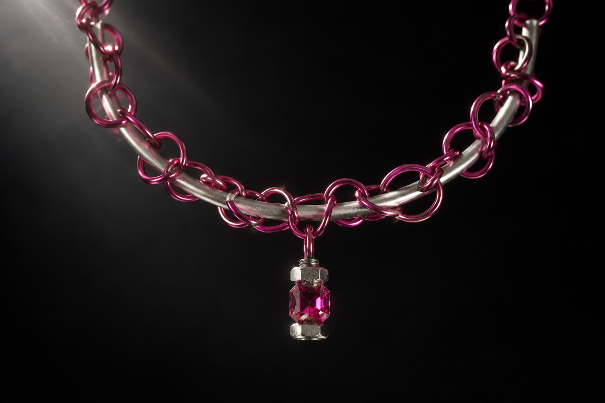
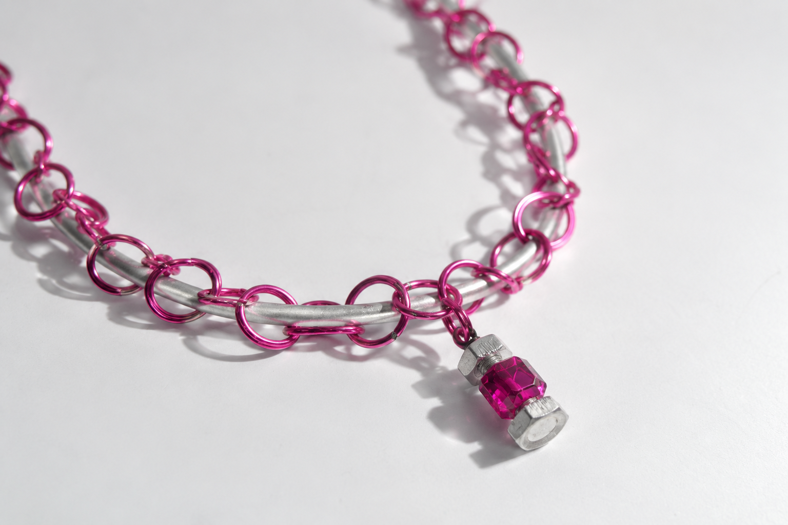
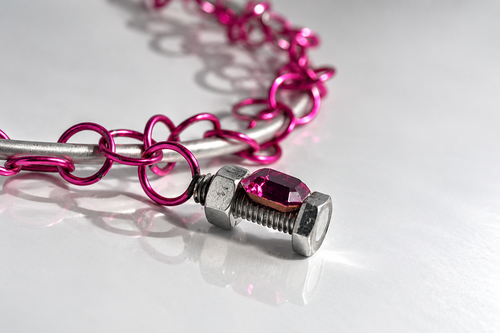
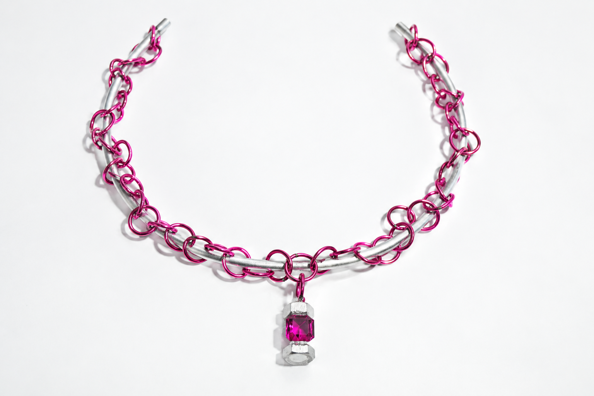
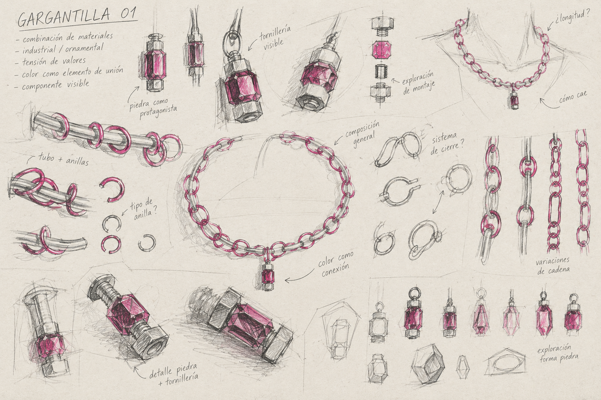
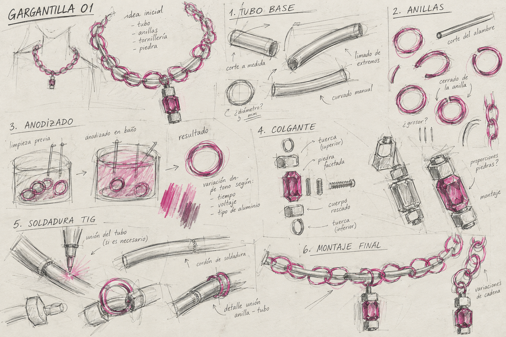
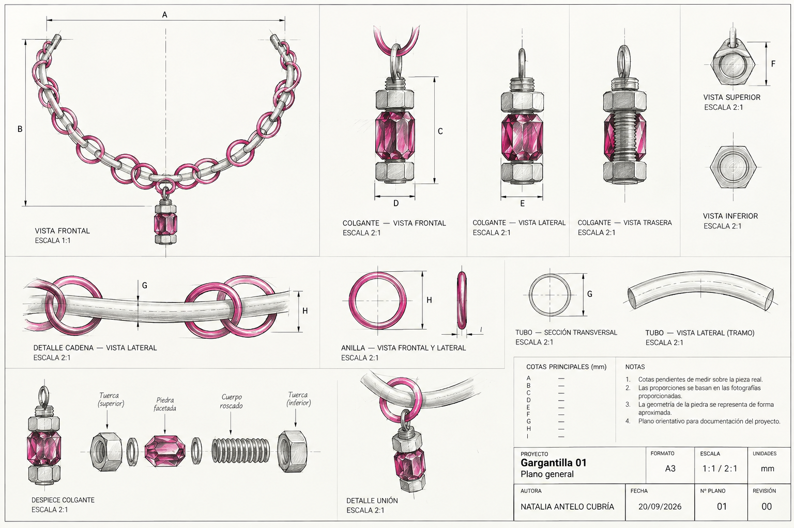

PARITY / 01
CLAMP

01 — PREGUNTA
¿QUÉ NOS HACE PERCIBIR UN MATERIAL COMO MÁS VALIOSO QUE OTRO?
PARITY reúne componentes asociados a distintos contextos y jerarquías culturales de valor. Los herrajes industriales, las anillas de aluminio anodizado, una estructura metálica y una piedra facetada conservan sus distintas asociaciones. El montaje pregunta por qué una fijación corriente y un elemento ornamental se interpretan como pertenecientes a distintos niveles de valor.
El herraje sigue siendo reconocible. Su función cambia cuando sostiene la piedra y pasa a formar parte de la pieza de cuello.



02 — COMPONENTE + COMPONENTE + COMPONENTE
LA UNIÓN NO PRETENDE SER OTRA COSA.
La piedra rosa facetada se sitúa directamente dentro de un herraje industrial visible. La rosca y las tuercas siguen siendo legibles. Las anillas de aluminio anodizado rosa/fucsia se repiten alrededor de una estructura metálica curva; el color conecta elementos cuyas asociaciones materiales se mantienen deliberadamente distintas.



03 — MONTAJE / PERCEPCIÓN
Las anillas de aluminio anodizado rosa/fucsia se repiten alrededor de la estructura de color plateado. La piedra rosa facetada, la rosca y las tuercas permanecen visibles, en lugar de quedar ocultas en un engaste convencional.
La lámina de proceso y el plano de componentes sitúan el elemento ornamental junto a la fijación y las anillas repetidas. La intervención está en cómo se reúnen esos componentes y cómo ese montaje cambia su percepción.
La piedra y el herraje no llegan con el mismo valor percibido. CLAMP hace que ocupen el mismo objeto.